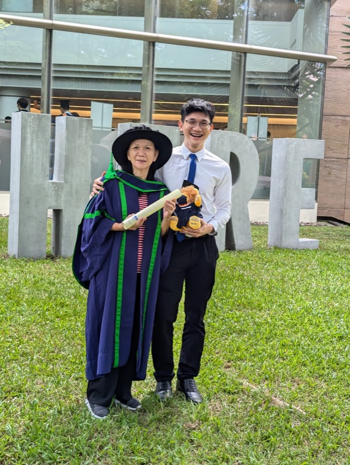

At my PhD graduation, with my mother
Thanh Lam
Machine Learning Researcher
I'm a machine learning researcher with a background in theoretical machine learning, reinforcement learning, and deep learning.
I work as a Quantitative Researcher at Citadel Securities, where I spearhead neural-network research for the high-frequency futures team, developing deep-learning methods for short-horizon time-series prediction.
I received my PhD in Computer Science from the National University of Singapore, advised by Prof. Bryan Low (NUS) and Prof. Patrick Jaillet (MIT), working on reinforcement learning, sequential decision-making, and learning theory. My research has appeared at ICLR, ICML, and TMLR.
Research Experience
Quantitative Researcher
Citadel Securities · London
- Spearhead the high-frequency futures team's neural-network alpha research.
- Built the team's deep-learning training recipe from scratch to production: large-scale sequential recurrent models for short-horizon prediction on noisy, non-stationary market data.
Quantitative Research Intern
Citadel Securities · Singapore
Alpha research in digital assets.
Research Interests
Theoretical machine learning
Learning theory and the mathematical foundations of learning algorithms: error bounds, generalization, and implicit regularization.
Reinforcement learning & sequential decision-making
Reinforcement learning and multi-armed bandits, through both an algorithmic and a theoretical lens: risk-sensitive learning and regret guarantees.
Optimization & learning algorithms
Optimization dynamics and how training algorithms shape what models learn, connecting optimization and generalization.
Deep learning & sequence models
Neural architectures, sequence modelling, and practical training methodology for noisy, non-stationary time series.
Selected Publications
Bold = me · * = equal contribution · full list on Google Scholar.
Peer-reviewed
-
ICLR 2023
Risk-Aware Reinforcement Learning with Coherent Risk Measures and Non-linear Function Approximation
Gives a unified framework for analyzing the regret of risk-aware RL with coherent risk measures under non-linear function approximation, with the first sub-linear regret bounds in this setting. The proposed algorithm, RA-UCB, covers the whole class of coherent risk measures and is validated on synthetic and real-world data.
-
TMLR 2023
On Average-Case Error Bounds for Kernel-Based Bayesian Quadrature
Relates average-case Bayesian quadrature error to \(L^2\) function-approximation error, recovering near-optimal rates for Matérn kernels under noise and giving new results for squared-exponential kernels and misspecification, plus algorithm-independent lower bounds.
-
ICML 2021
Model Fusion for Personalized Learning
Builds models for new, data-scarce tasks by fusing independently pre-trained models of related tasks, removing the synchronized training that meta-learning requires. Comes with a performance guarantee.
-
ICML 2020
Learning Task-Agnostic Embedding of Multiple Black-Box Experts for Multi-Task Model Fusion
Represents black-box experts with different architectures and private data as distributions over task-agnostic predictive prototypes, which can be recombined into a model for a new task.
Preprints & working papers
-
arXiv 2024
Implicit Bias via Spectral Neural Networks and Non-linear Matrix Sensing
Shows that gradient flow on spectral neural networks for matrix sensing drives the loss down exponentially fast and is implicitly biased toward minimum nuclear-norm solutions.
-
Working paper
Online Data Procurement with Self-Interested Agents
Education
Ph.D., Computer Science
National University of Singapore · GPA 4.6/5
Advised by Prof. Bryan Low (NUS) and Prof. Patrick Jaillet (MIT). SMART Graduate Fellowship.
Visiting Graduate Student
MIT · Laboratory for Information & Decision Systems (LIDS)
Hosted by Prof. Patrick Jaillet.
B.Comp., Computer Science (First Class Honours)
National University of Singapore · GPA 4.6/5
Awards & Service
Awards
- 2019 SMART Graduate Fellowship (sole recipient across 4 universities)
- '20–'21 Research Achievement Award (×2)
- 2021 Honor List for Teaching Excellence
- 2019 Dean's List
- 2015 ASEAN Undergraduate Scholarship (1 of 3 nationwide)
Service
- Reviewer for ICML, NeurIPS, ICLR, AISTATS, Neural Networks, and IEEE RA-L (2021–2023).